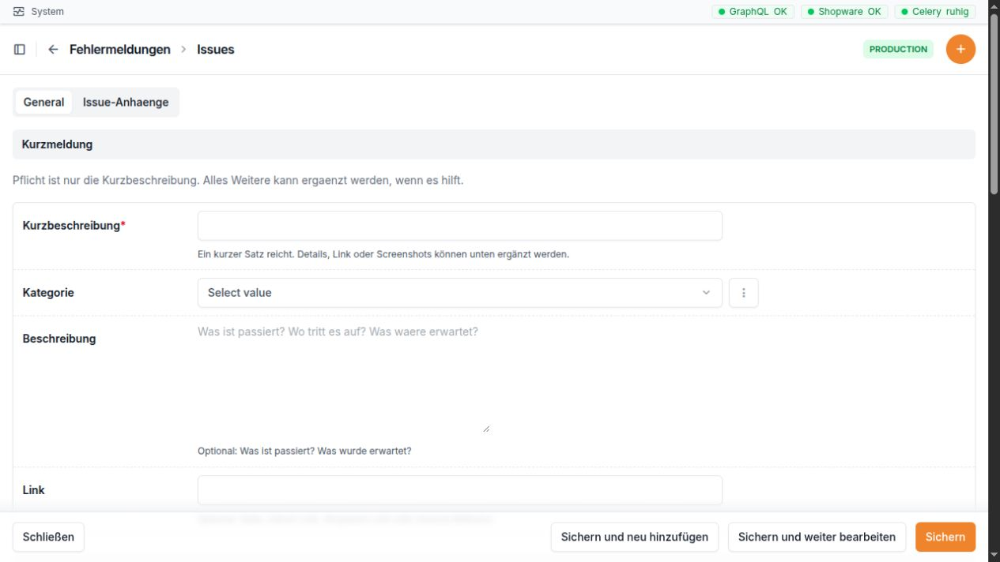

Issues¶
Wofür ist dieser Bereich da?¶
Im Bereich Issues werden Fehler, offene Fragen und kleine Arbeitsaufträge gesammelt. Ein Issue beschreibt kurz, was passiert ist, wer sich darum kümmert und wie weit die Bearbeitung ist. Bilder, PDF-Dateien und Fehlerdateien können direkt am Issue abgelegt werden.
Erledigte und geschlossene Einträge verschwinden nicht. Sie werden automatisch im Issue-Archiv angezeigt und bleiben dort nachvollziehbar.


Beim Anlegen reicht eine kurze, klare Überschrift. Kategorie, Beschreibung und Link machen die Meldung leichter verständlich.
Die Arbeitsliste „Issues“¶
Die Arbeitsliste zeigt nur Vorgänge, die noch nicht erledigt oder geschlossen sind. Standardmäßig stehen die neuesten Einträge oben.
Spalten der Liste¶
Spalte |
Bedeutung |
|---|---|
Kurzbeschreibung |
Der Titel des Issues. Ein Klick öffnet den Vorgang. |
Kategorie |
Das Thema, zu dem der Vorgang gehört. |
Status |
Der aktuelle Bearbeitungsstand. |
Priorität |
Zeigt, wie dringend der Vorgang ist. Die Priorität kann direkt in der Liste geändert werden. |
Gemeldet von |
Der Mitarbeiter, der das Issue angelegt hat. |
Zugewiesen an |
Der verantwortliche Mitarbeiter. Die Zuweisung kann direkt in der Liste geändert werden. |
Link |
Zeigt Öffnen, wenn im Issue eine Adresse hinterlegt wurde. Der Link öffnet sich in einem neuen Fenster oder Tab. Ohne hinterlegte Adresse steht hier ein Strich. |
Anhänge |
Anzahl der am Issue gespeicherten Dateien. |
Angelegt am |
Zeitpunkt, zu dem das Issue erstellt wurde. |
Suchen und filtern¶
Die Suche berücksichtigt die Kurzbeschreibung, die Beschreibung, den Link, den Fehlertext sowie Namen und Benutzernamen der meldenden und zugewiesenen Person.
Die Liste kann nach folgenden Angaben gefiltert werden:
Status
Priorität
Kategorie
zugewiesener Mitarbeiter
Anlagedatum
So lässt sich zum Beispiel schnell die persönliche Arbeitsliste anzeigen: Im Filter Zugewiesen an den eigenen Namen wählen und bei Status nur die gewünschten Bearbeitungsstände auswählen.
Ein Issue anlegen oder bearbeiten¶
Zum Anlegen in der Arbeitsliste Issue hinzufügen wählen. Für ein neues Issue ist nur die Kurzbeschreibung zwingend erforderlich. Je genauer die hilfreichen Angaben sind, desto leichter kann der Vorgang bearbeitet werden.
Abschnitt „Kurzmeldung“¶
Feld |
Eingabe und Bedeutung |
|---|---|
Kurzbeschreibung |
Pflichtfeld. Ein kurzer, eindeutiger Satz mit höchstens 255 Zeichen. Er sollte beschreiben, was nicht funktioniert oder was geklärt werden soll. |
Kategorie |
Optional. Ordnet das Issue einem Thema zu. Es werden nur aktive Kategorien angeboten. |
Beschreibung |
Optional. Hier gehört hinein, was passiert ist, wo es passiert ist und was stattdessen erwartet wurde. Das Feld bietet viel Platz für eine verständliche Schilderung. |
Link |
Optional. Direkte Adresse zur betroffenen Seite, zu einem Eintrag in der Bridge, zu Shopware oder zu einer anderen passenden Fundstelle. Es muss eine vollständige Webadresse sein. |
Abschnitt „Bearbeitung“¶
Feld |
Eingabe und Bedeutung |
|---|---|
Status |
Legt den Bearbeitungsstand fest. Die möglichen Werte werden unten erklärt. |
Priorität |
Legt die Dringlichkeit fest. Beim Anlegen ist Normal vorausgewählt. |
Zugewiesen an |
Verantwortlicher Mitarbeiter. Es werden Benutzer mit Mitarbeiterrechten angeboten. Ein fest eingerichteter Standardbearbeiter ist vorausgewählt; der angezeigte Name hängt von der Benutzerverwaltung der Bridge ab. Das Feld kann auch leer bleiben. |
Gemeldet von |
Wird beim Anlegen automatisch mit dem angemeldeten Mitarbeiter gefüllt und kann nicht von Hand geändert werden. |
Statuswerte¶
Status |
Einfache Bedeutung |
|---|---|
Offen |
Das Issue ist neu oder wurde noch nicht begonnen. |
In Bearbeitung |
Jemand arbeitet gerade daran. |
Wartet |
Die Bearbeitung kann im Moment nicht weitergehen, etwa weil eine Antwort oder eine andere Voraussetzung fehlt. |
Erledigt |
Das Problem wurde gelöst. Eine Lösungsdokumentation ist Pflicht. Der Eintrag wechselt ins Archiv. |
Geschlossen |
Der Vorgang ist endgültig beendet. Eine Lösungsdokumentation ist Pflicht. Der Eintrag wechselt ins Archiv. |
Prioritäten¶
Priorität |
Verwendung |
|---|---|
Niedrig |
Der Vorgang kann warten und behindert die tägliche Arbeit nicht. |
Normal |
Üblicher Vorgang ohne besondere Eile. Dies ist die Voreinstellung. |
Hoch |
Der Vorgang sollte zeitnah bearbeitet werden. |
Dringend |
Der Vorgang beeinträchtigt die Arbeit stark und braucht sofortige Aufmerksamkeit. |
Abschnitt „Fehlerdetails“¶
Feld |
Eingabe und Bedeutung |
|---|---|
Fehlertext |
Optional. Hier kann eine angezeigte Fehlermeldung oder ein kopierter Auszug aus einem Protokoll eingefügt werden. Der Text sollte möglichst unverändert übernommen werden. |
Fehlertext-Datei |
Optional. Hier kann eine Fehler- oder
Protokolldatei hochgeladen werden. Erlaubt
sind Dateien mit den Endungen |
Link / Öffnen |
Schreibgeschützte Anzeige des oben eingetragenen Links. Ohne Link wird ein Strich angezeigt. |
Anhänge |
Schreibgeschützte Anzahl der Dateien, die unten im Bereich Issue-Anhänge gespeichert sind. Bei einem noch nicht gespeicherten Issue steht hier 0. |
Abschnitt „Abschlussdokumentation“¶
Feld |
Eingabe und Bedeutung |
|---|---|
Lösungsdokumentation |
Beschreibt kurz, was gemacht wurde und warum. Sobald der Status Erledigt oder Geschlossen gewählt wird, ist dieses Feld Pflicht. |
Abgeschlossen am |
Wird beim ersten Abschluss automatisch gesetzt und kann nicht von Hand geändert werden. |
Abgeschlossen von |
Wird beim ersten Abschluss automatisch mit dem angemeldeten Mitarbeiter gefüllt und kann nicht von Hand geändert werden. |
Wird Erledigt oder Geschlossen ohne Lösungsdokumentation gespeichert, bleibt das Formular geöffnet und zeigt den Hinweis: „Bitte dokumentiere kurz, was gelöst wurde und warum, bevor das Issue archiviert wird.“
Abschnitt „System“¶
Dieser eingeklappte Abschnitt dient nur zur Information:
Feld |
Bedeutung |
|---|---|
Angelegt am |
Zeitpunkt der ersten Speicherung. |
Aktualisiert am |
Zeitpunkt der letzten Änderung. |
Beide Angaben werden automatisch geführt.
Anhänge hinzufügen¶
Im unteren Teil des Issue-Formulars befindet sich der Bereich Issue-Anhänge. Dort können mehrere Dateien nacheinander ergänzt werden.
Feld |
Eingabe und Bedeutung |
|---|---|
Art |
Auswahl zwischen Screenshot, Fehlerdatei und Sonstiges. Beim neuen Anhang ist Screenshot vorausgewählt. |
Datei |
Pflichtfeld für den jeweiligen Anhang. Erlaubt
sind |
Hinweis |
Optionaler kurzer Text, der erklärt, was auf dem Bild oder in der Datei wichtig ist. |
Angelegt am |
Wird nach dem Speichern automatisch angezeigt. |
Ein nicht mehr benötigter Anhang kann im Issue zum Löschen markiert werden. Die Änderung wird erst mit dem Speichern des gesamten Issues übernommen.
Tipp: Bei einem Screenshot im Feld Hinweis kurz den sichtbaren Fehler und die wichtige Stelle benennen. So muss der Bearbeiter nicht raten, worauf er achten soll.
Ein Issue abschließen¶
Das Issue öffnen.
Prüfen, ob Beschreibung, Fehlerdetails und Anhänge für spätere Rückfragen ausreichen.
Im Feld Lösungsdokumentation kurz festhalten, was geändert oder geklärt wurde und warum.
Den Status auf Erledigt oder Geschlossen setzen.
Speichern.
Beim Speichern werden Abschlusszeitpunkt und abschließender Mitarbeiter automatisch eingetragen. Anschließend erscheint der Vorgang nicht mehr in der normalen Arbeitsliste, sondern im Issue-Archiv.
Das Issue-Archiv¶
Das Archiv enthält ausschließlich Issues mit dem Status Erledigt oder Geschlossen. Die Felder, Suche und Filter entsprechen weitgehend der normalen Arbeitsliste. Im Archiv kann kein neues Issue angelegt werden.
Soll ein Vorgang erneut bearbeitet werden, gibt es drei Möglichkeiten:
in der Archivliste die Aktion Wiederherstellen direkt in der Zeile verwenden,
ein archiviertes Issue öffnen und Aus Archiv wiederherstellen wählen,
mehrere Einträge markieren und die Sammelaktion Aus Archiv wiederherstellen ausführen.
Beim Wiederherstellen erhält das Issue den Status In Bearbeitung und erscheint wieder in der normalen Arbeitsliste. Die bisherige Lösungsdokumentation bleibt erhalten und kann bei Bedarf ergänzt werden.
Kategorien¶
Kategorien machen die Arbeitsliste übersichtlicher. Nur Administratoren können sie verwalten. Mitarbeiter können aktive Kategorien beim Bearbeiten eines Issues auswählen.
Felder einer Kategorie¶
Feld |
Eingabe und Bedeutung |
|---|---|
Name |
Pflichtfeld. Eindeutiger Name mit höchstens 120 Zeichen. Derselbe Name kann nicht zweimal angelegt werden. |
Beschreibung |
Optional. Erklärt, welche Issues in diese Kategorie gehören. |
Farbe |
Optional. Farbwert für die Kennzeichnung. Ohne eigene Angabe wird ein gedecktes Grau verwendet. In der Kategorienliste werden ein Farbpunkt und der gespeicherte Wert angezeigt. |
Aktiv |
Nur aktive Kategorien stehen im Issue-Formular zur Auswahl. Eine nicht mehr benötigte Kategorie sollte deaktiviert werden, wenn vorhandene Zuordnungen erhalten bleiben sollen. |
Angelegt am |
Automatisch gesetzter Zeitpunkt der Erstellung. |
Aktualisiert am |
Automatisch gesetzter Zeitpunkt der letzten Änderung. |
Die Kategorienliste zeigt Name, eine Vorschau der Farbe, Aktiv und Aktualisiert am. Der Schalter Aktiv kann direkt in der Liste geändert werden. Außerdem kann nach aktiven und inaktiven Kategorien gefiltert sowie in Name und Beschreibung gesucht werden.
Automatisch angelegte Issues¶
Bestimmte Hintergrundaufgaben der Bridge können Fehler selbst als Issue festhalten. Solche Einträge tragen häufig einen Titel, der mit [Task] beginnt. Sie sind normalerweise Offen und haben eine hohe Priorität. Der gesammelte Fehler steht im Feld Fehlertext.
Gibt es bereits ein offenes Issue mit genau demselben Titel, wird nicht jedes Mal ein weiterer Vorgang angelegt. Der neue Fehlertext wird dem vorhandenen Issue hinzugefügt. Dadurch bleibt die Arbeitsliste übersichtlich und die wiederholten Fehler stehen gemeinsam an einem Ort. Automatisch angelegte Issues werden anschließend genauso zugewiesen, bearbeitet und abgeschlossen wie manuell angelegte Issues.
Meldung über neue Issues nach der Anmeldung¶
Nach einer Anmeldung kann oben rechts eine gelbe Meldung Neues Issue erscheinen. Sie zeigt den Titel und führt mit einem Klick direkt zum Issue. Bei einem bereits abgeschlossenen Issue führt der Link ins Archiv.
Die Meldung betrifft neu angelegte Issues seit der letzten Prüfung und ist nicht auf die eigene Zuweisung beschränkt. Sie schließt sich nach etwa zehn Sekunden selbst oder kann über das Kreuz geschlossen werden. Beim allerersten Einsatz werden vorhandene alte Issues nicht nachträglich als neue Meldungen gezeigt.
Häufige Hinweise und Fehlerquellen¶
Das Issue ist nach dem Speichern verschwunden: Bei Erledigt oder Geschlossen ist es ins Issue-Archiv gewechselt.
Der Abschluss lässt sich nicht speichern: Im Feld Lösungsdokumentation fehlt eine kurze Erklärung.
Eine Kategorie fehlt in der Auswahl: Die Kategorie ist möglicherweise auf inaktiv gestellt. Ein Administrator kann dies unter Kategorien prüfen.
Eine Datei wird abgelehnt: Die Dateiendung ist für das gewählte Dateifeld nicht erlaubt. Screenshots gehören am besten in Issue-Anhänge, nicht in Fehlertext-Datei.
Der Link lässt sich nicht speichern: Im Feld Link muss eine vollständige Webadresse stehen, in der Regel beginnend mit
http://oderhttps://.Die Liste zeigt zu viele Einträge: Mit Status, Priorität, Kategorie oder Zuweisung filtern. Die Suche eignet sich für Wörter aus Titel, Beschreibung oder Fehlertext.
Ein Issue soll doch weiterbearbeitet werden: Im Issue-Archiv die Funktion Wiederherstellen verwenden.
Eine Kategorie soll nicht mehr verwendet werden: Sie besser deaktivieren statt löschen. So bleiben ältere Issues verständlich zugeordnet.
Eine Warnmeldung verschwindet schnell: Das ist beabsichtigt. Das Issue bleibt trotzdem in der Arbeitsliste oder im Archiv erhalten.
Praxisbeispiel 1: Fehler beim Bearbeiten einer Bestellung melden¶
Eine Mitarbeiterin kann eine Bestellung öffnen, aber beim Speichern erscheint eine Fehlermeldung.
In der linken Navigation Issues → Issues öffnen und Issue hinzufügen wählen.
Als Kurzbeschreibung eintragen: „Bestellung 4711 lässt sich nicht speichern“.
Eine passende Kategorie wählen, sofern vorhanden.
In der Beschreibung festhalten: „Der Fehler erscheint nach einer Änderung der Lieferadresse beim Klick auf Speichern. Erwartet wurde, dass die neue Adresse übernommen wird.“
Den vollständigen Link zur betroffenen Bestellung in Link einfügen.
Die angezeigte Meldung unverändert in Fehlertext kopieren.
Priorität Hoch wählen, weil die Bestellung weiterbearbeitet werden muss.
Unter Issue-Anhänge die sichtbare Fehlermeldung als Screenshot hochladen. Als Hinweis „Fehlermeldung nach dem Speichern der Lieferadresse“ eintragen.
Das Issue speichern. Gemeldet von wird automatisch gesetzt; der vorausgewählte Bearbeiter kann bei Bedarf geändert werden.
Während der Prüfung den Status auf In Bearbeitung stellen. Falls zunächst eine Rückmeldung benötigt wird, vorübergehend Wartet wählen.
Nach der Korrektur in Lösungsdokumentation eintragen: „Die unvollständige Lieferadresse wurde ergänzt. Danach konnte die Bestellung wieder gespeichert werden.“
Den Status auf Erledigt setzen und speichern. Das Issue liegt nun mit Abschlusszeit und Bearbeiter im Archiv.
Das Ergebnis ist ein nachvollziehbarer Vorgang: Die betroffene Stelle ist direkt verlinkt, der genaue Fehler ist erhalten und die Lösung kann später nachgelesen werden.
Praxisbeispiel 2: Einen zu früh geschlossenen Vorgang wieder aufnehmen¶
Ein Issue wurde geschlossen, doch am nächsten Tag tritt dasselbe Problem erneut auf.
In der linken Navigation Issues → Issue-Archiv öffnen.
Über die Suche ein markantes Wort aus der Kurzbeschreibung eingeben.
Den gefundenen Vorgang öffnen und die bisherige Beschreibung, Anhänge und Lösungsdokumentation prüfen.
Aus Archiv wiederherstellen wählen. Der Status ändert sich automatisch auf In Bearbeitung, und die normale Issue-Liste wird geöffnet.
Das wiederhergestellte Issue öffnen.
In der Beschreibung ergänzen, wann und unter welchen Umständen der Fehler erneut aufgetreten ist.
Einen neuen Screenshot als weiteren Issue-Anhang hinzufügen und den Zeitpunkt im Hinweis nennen.
Die Priorität bei Bedarf auf Dringend erhöhen und die zuständige Person unter Zugewiesen an prüfen.
Nach der erneuten Lösung die Lösungsdokumentation um die neue Ursache und die dauerhafte Maßnahme ergänzen.
Den Status wieder auf Erledigt oder Geschlossen setzen und speichern.
Auf diese Weise bleibt die gesamte Vorgeschichte an einem Ort. Es entsteht kein zweiter, schwer zuzuordnender Vorgang.